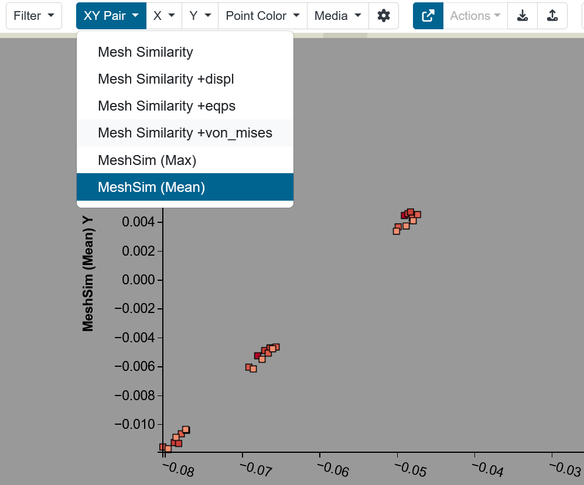

XY Pair Control
The Parameter Space model recognizes matched pairs of columns from the ingested data table, such as pairs of (x, y) coordinates. When XY pairs are present Slycat allows a user to visualize that pair with a single selection in the Navbar, instead of individually selecting the X-axis variable and the Y-axis variable.
To mark the matched pair of columns in the initial data table, the labels for the 2 columns are prefaced with [XYpair X] and [XYpair Y].
Here is an examples of valid XY pair column label:
[XYpair X]Risk PCA X, [XYpair Y]Risk PCA Y
The Source Data page contians the full specification for this feature, see the Source Data, CSV Format Data Table page for these details and examples.
XY Pair Plotting and Usage
When XY Pairs are present, the Parameter Space user interface displays an XY Pair control for selecting a pair for scatterplot visualization. The pair is correspondingly plotted on the X and Y axis, and the corresponding axis labels are displayed.

Figure 67: XY Pair dropdown list showing the available pairs and the Y axis label of the selected pair.